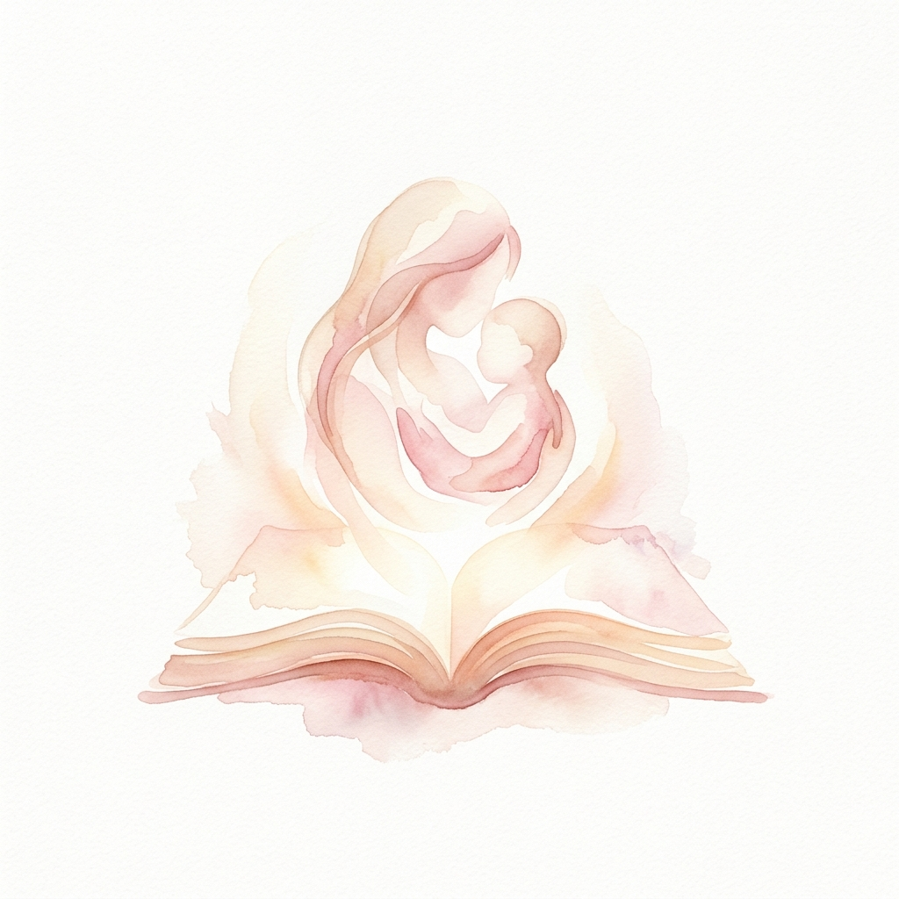
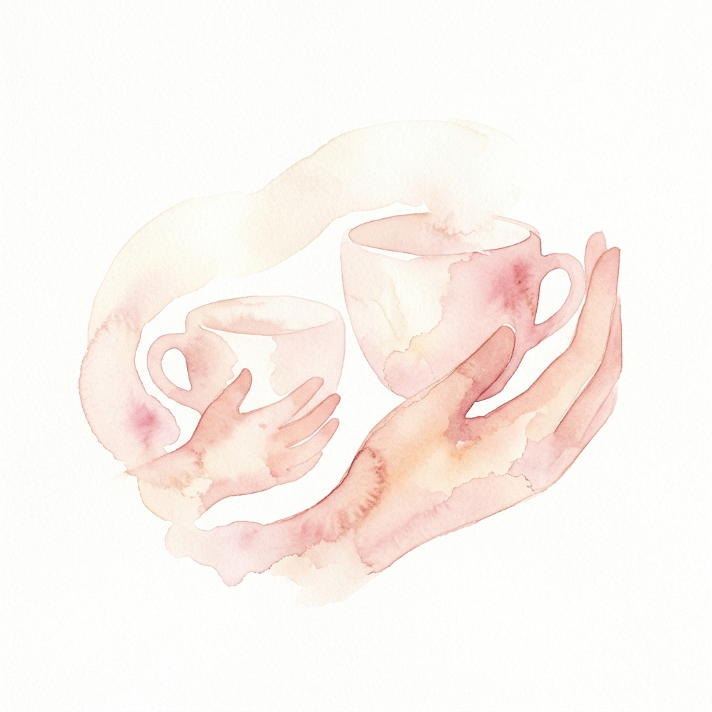
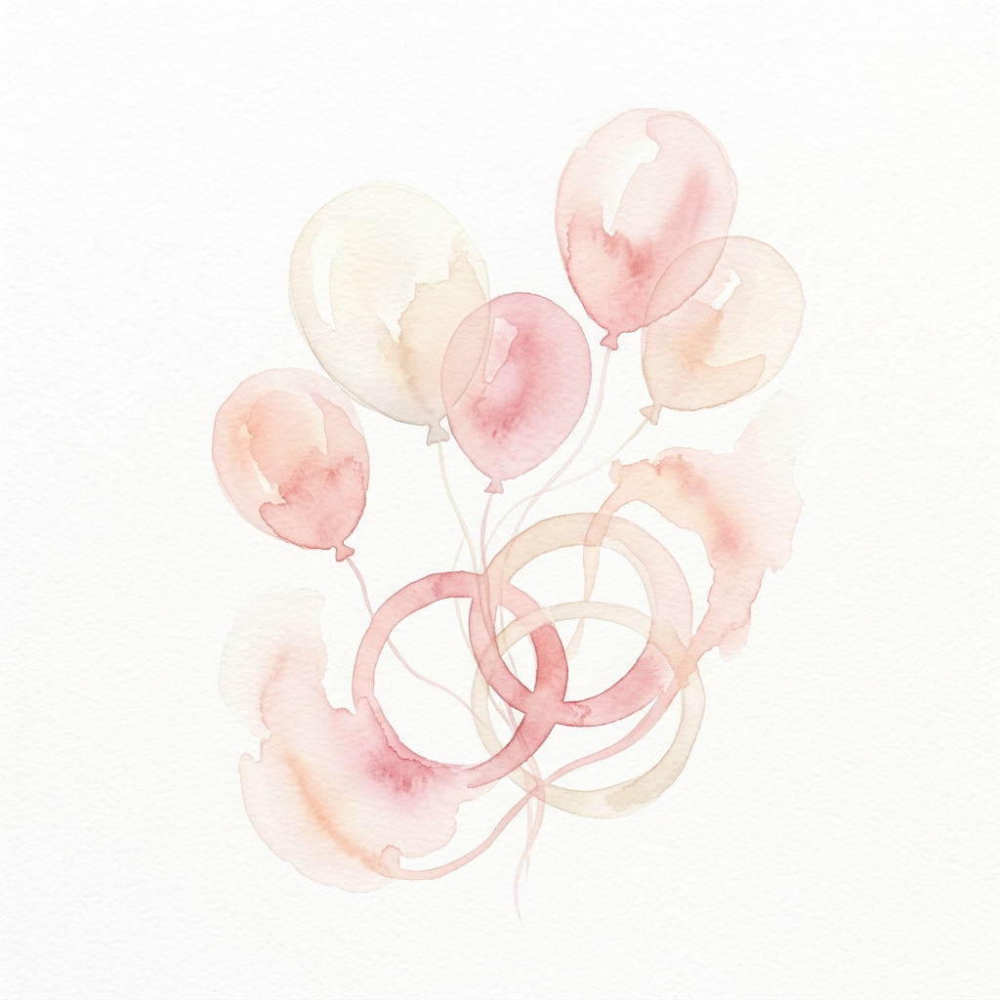
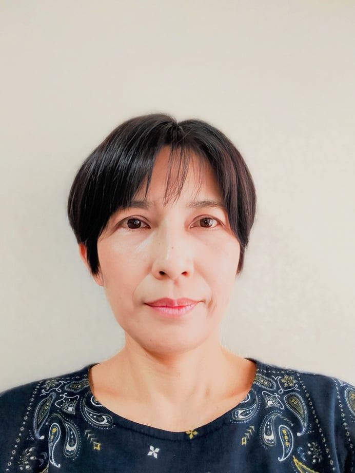

親も子供も、
そのままでいい。
「穏やかな子育て」を目指して
不登校・行き渋り・ひきこもり
親子関係・子育て
どうして？？なんで？？
どうしたらいいの？
様々な場面で悩みますよね、、、
温かな「愛着」の視点から
考える力を親が身につけていく
ことで、
ほとんどの悩みは
なくなります。
親子で穏やかな心を取り戻し、温かな家庭を手に入れるために。
親が人と温かくつながりながら、「愛着」を学ぶ。
子供や自分、人の心を理解しようとする「共感」の方法を身につける。
そんな大人の居場所づくりをめざします。
ふわわ について
2024年8月 発足
親同士のつながりを中心に、親子が笑顔になるために。
皆さんの声をききながら、様々なことにチャレンジします。

勉強会・講演会・セミナー
愛着と共感がなぜ必要か？不登校の根本原因を共に学び知る場です。

共感練習会・相談会
愛着的なあり方や考え方を、日々の実生活にしっかりと落とし込み身につけます。

懇親会・レクリエーション
同じ悩みを持つ親同士のつながりを大切に。親自身もリラックスして楽しみましょう！
代表紹介

親子関係・不登校カウンセラー
(社)子供自信協会 専属トレーナー
- 1969年 埼玉県大宮市生まれ。父母が宇都宮で飲食店を開き、多忙な父母のもとに育つ。
- 大学時代 友人の一言から自分がアダルトチルドレンだと気づく。念願の教員として働き始めるも半年で退職。
- 出産〜 結婚し、長男、次男、三男を出産。家事と育児に没頭するも「自分はおかしい」との思いがぬぐえないまま過ごす。
- 2016年 子供の不登校を経験。子供や学校、夫、周囲、そして自分自身を責めながら最悪の心理状態に。これを機に心理学を学び始める。
- 2018年 新井輝一氏に出会い「愛着と共感」を知る。
- 2022年 子供自信協会の専属トレーナーとして活動開始。
- 2024年 「ふわわ」発足。代表となる。
サポート内容
個別相談
不登校改善 / 親子関係改善 / ひきこもり改善 / 夫婦関係改善 など
状況の確認、個別に具体的な相談をお受けします。
会話添削
親子の会話を録音し文字起こししたものを提出いただき、個別・具体的な指導を行います。